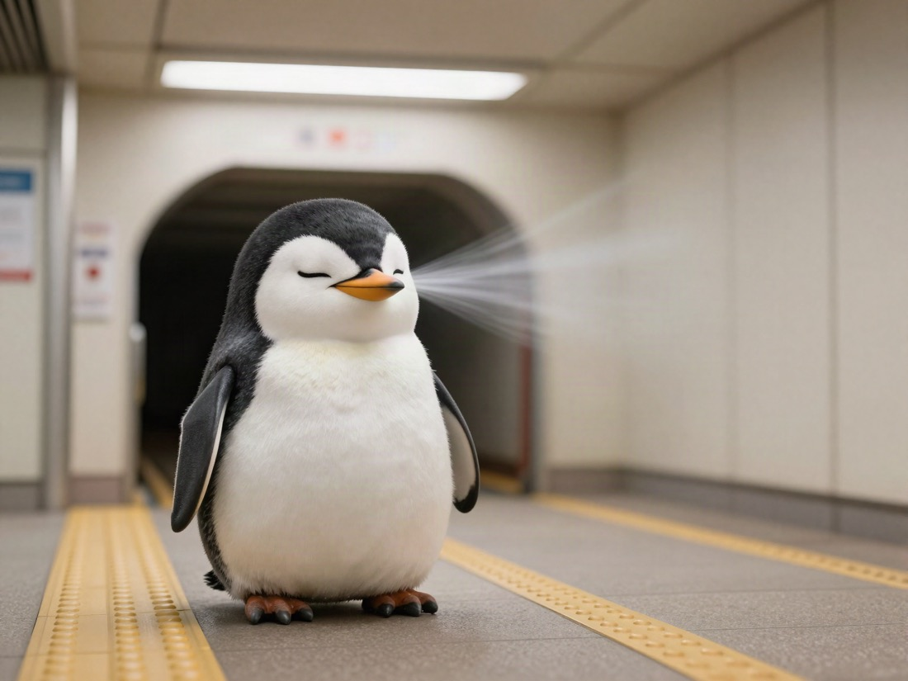
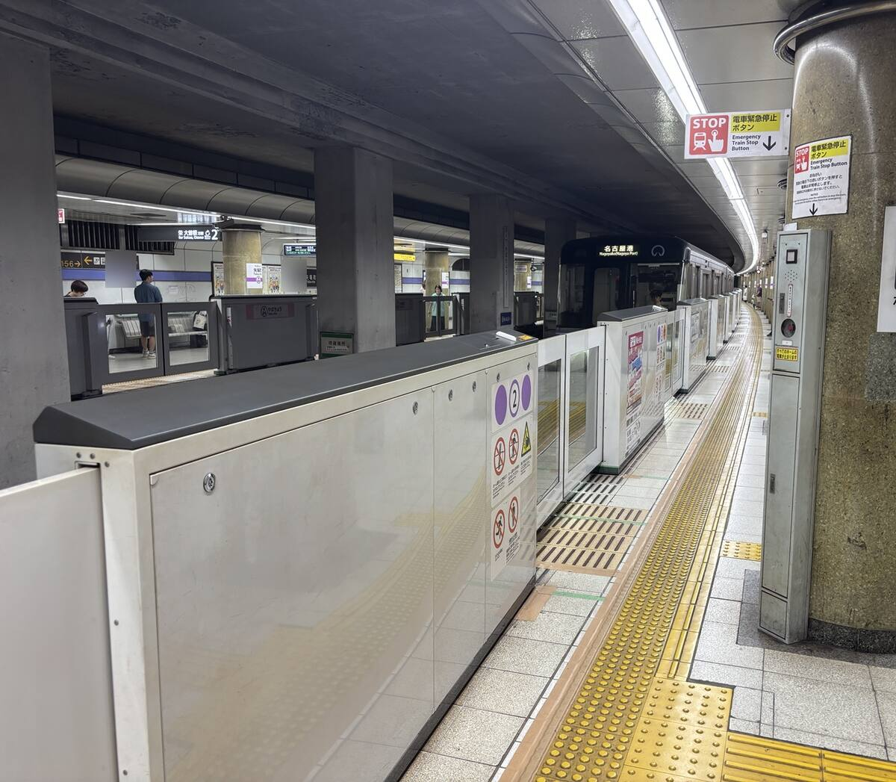

✈️ TRAVEL⚡ 18 SEC
I like the smell while waiting on Japanese subway platforms

Old Favorite
There is a smell I have quietly liked for years.
The smell of Japanese subways.
Hard To Say
I wonder why.
I cannot explain it well, but I like that “subway smell” floating by while I wait.

Somehow Good
It is not a good smell, but somehow I like it.
Only The Platform
Not inside the train—the smell while waiting on the platform.
💛💛💛💛💛
PREVIOUS POST
I am from Nagoya, but I like Osaka Castle better